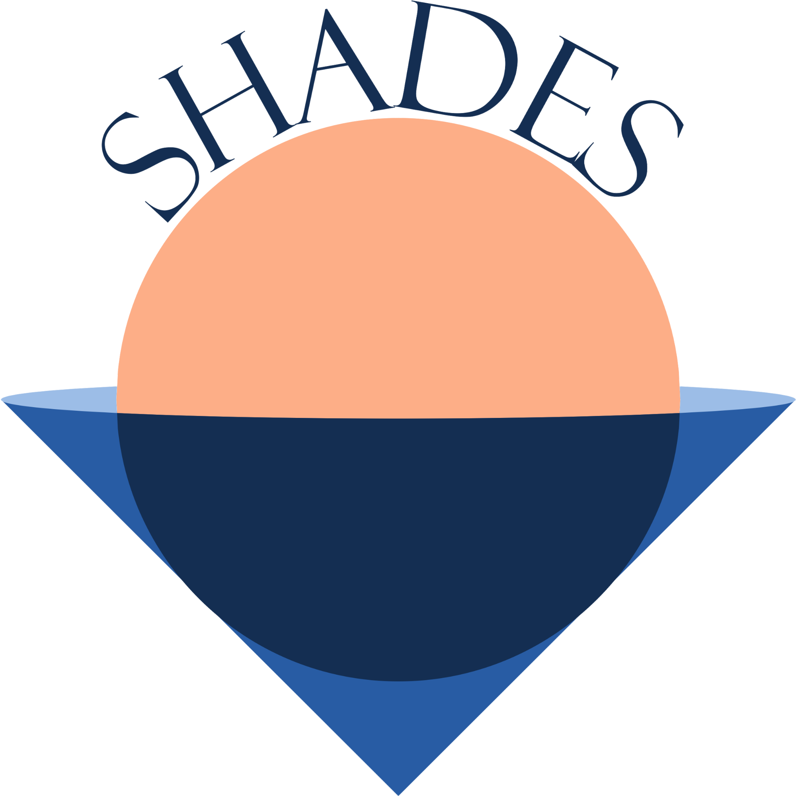
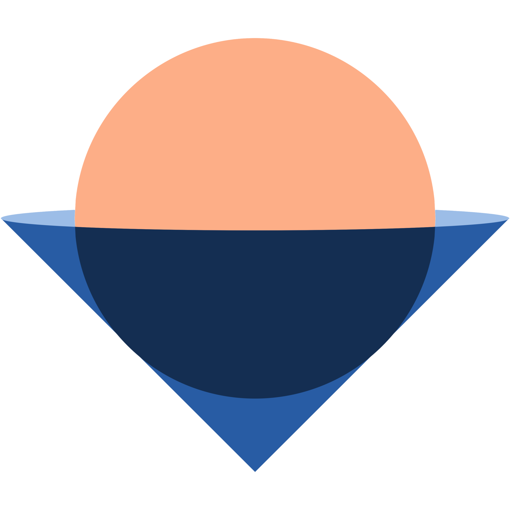

Hundrevis av uteserveringer i Oslo. Shades finner den med mest sol — time for time, hele dagen. Se sanntids solkart, sjekk vær og vind, og finn vennene dine. Aktiver JavaScript for å bruke appen.

